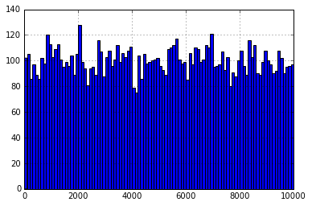
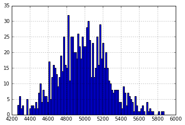

Learning machine learning? Try my machine learning flashcards or Machine Learning with Python Cookbook.
Demonstrate The Central Limit Theorem
Preliminaries
# Import packages
import pandas as pd
import numpy as np
# Set matplotlib as inline
%matplotlib inline Create Population Data From Non-Normal Distribution
# Create an empty dataframe
population = pd.DataFrame()
# Create an column that is 10000 random numbers drawn from a uniform distribution
population['numbers'] = np.random.uniform(0,10000,size=10000)# Plot a histogram of the score data.
# This confirms the data is not a normal distribution.
population['numbers'].hist(bins=100)<matplotlib.axes._subplots.AxesSubplot at 0x112c72710>

View the True Mean Of Population
# View the mean of the numbers
population['numbers'].mean()4983.824612472138
Take A Sample Mean, Repeat 1000 Times
# Create a list
sampled_means = []
# For 1000 times,
for i in range(0,1000):
# Take a random sample of 100 rows from the population, take the mean of those rows, append to sampled_means
sampled_means.append(population.sample(n=100).mean().values[0])Plot The Sample Means Of All 100 Samples
# Plot a histogram of sampled_means.
# It is clearly normally distributed and centered around 5000
pd.Series(sampled_means).hist(bins=100)<matplotlib.axes._subplots.AxesSubplot at 0x11516e668>

This is the critical chart, remember that the population distribution was uniform, however, this distribution is approaching normality. This is the key point to the central limit theory, and the reason we can assume sample means are not bias.
View The Mean Sample Mean
# View the mean of the sampled_means
pd.Series(sampled_means).mean()4981.465310909289
Compare To True Mean
# Subtract Mean Sample Mean From True Population Mean
error = population['numbers'].mean() - pd.Series(sampled_means).mean()
# Print
print('The Mean Sample Mean is only %f different the True Population mean!' % error)The Mean Sample Mean is only 2.359302 different the True Population mean!